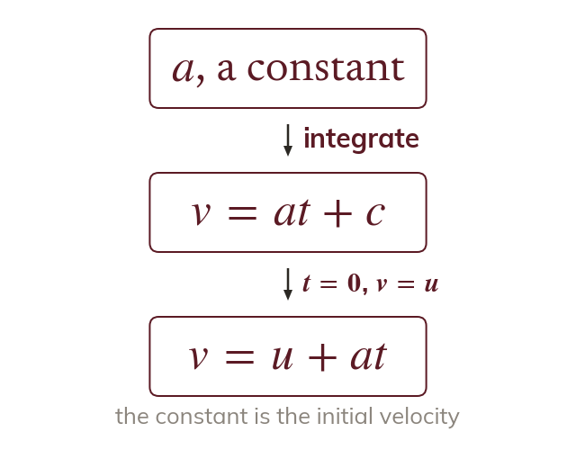
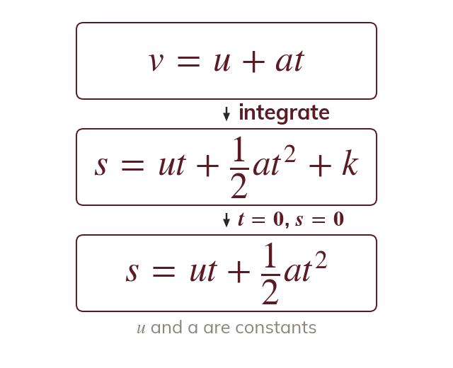
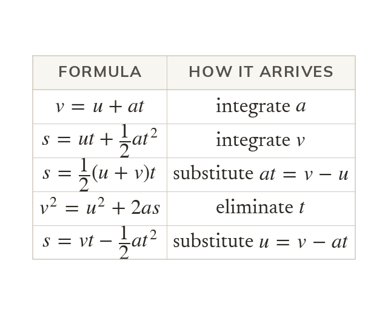
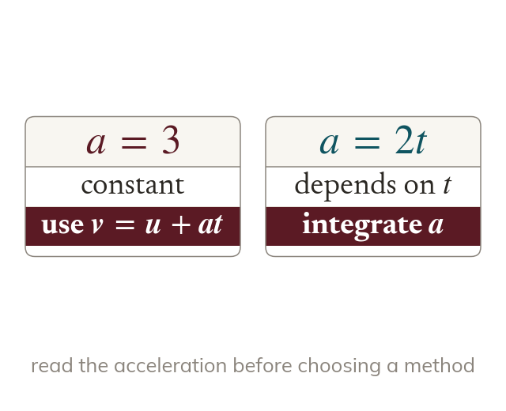
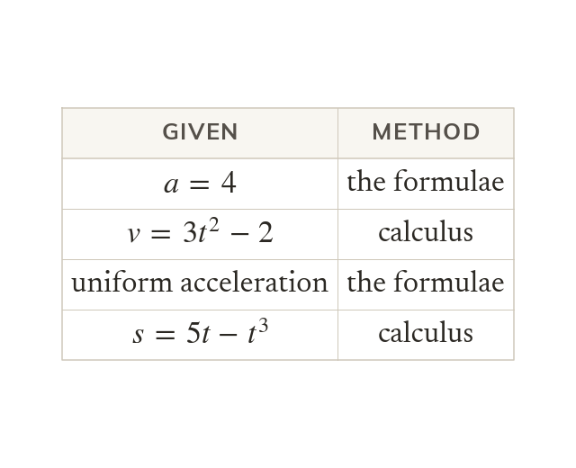

Integrate a constant acceleration
Integrating a constant acceleration a with respect to gives When the velocity is so and
The constant acceleration formulae from chapter are not separate facts: integrating a constant acceleration produces them. Proving them, and knowing when the acceleration is constant enough to use them, decides the method in every mechanics question from here on.
Work down the page at your own pace. Write every answer in your book first, then click to check it.
Read each card, then follow the worked examples one step at a time.

Integrating a constant acceleration a with respect to gives When the velocity is so and

Integrating gives Measured from the starting point, when so

Every other constant acceleration formula comes from these two. Substituting for u or eliminating t gives the remaining three.
Pick an answer. If it's wrong, the feedback tells you which mistake it was.
Read each card, then follow the worked examples one step at a time.

A constant acceleration lets you use the formulae, which are quicker. An acceleration that depends on t needs calculus.

A quantity written with such as means calculus. A number, or the words uniform acceleration, means the formulae.
Pick an answer. If it's wrong, the feedback tells you which mistake it was.
Finished? Next lesson: P2-2.1 The Modulus Function.
For each skill, tap the one that is true for you today. Your Revise pages start with anything you mark Not yet.
Your ratings are saved on this device only.
Log in, then search for a code to practise that skill.